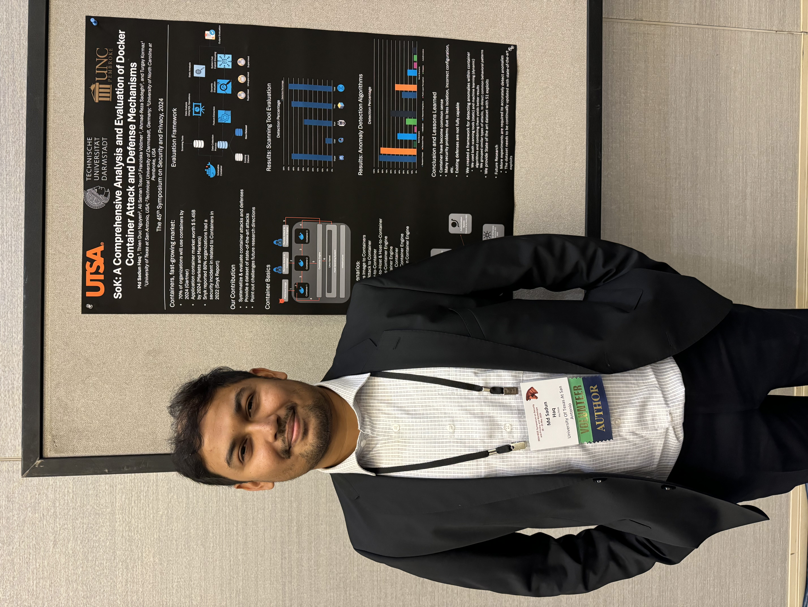
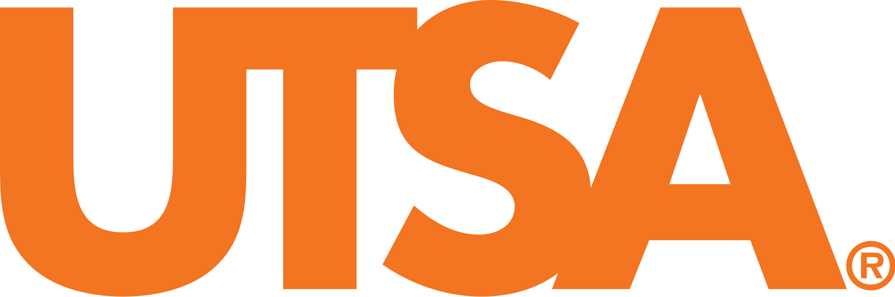

Resume: Md Sadun Haq
PhD. Candidate @ UTSA
Email: MdSadun[.]Haq[@]utsa[.]edu
Interest
Gaming, Nature, TravelingAffiliation

Jan 2020 – Present
Graduate Research Assistant
The University of Texas at San Antonio (UTSA)
Worked on the performance evaluation of containerized applications in multiple Edge devices and Cloud servers. Performed security and privacy evaluations for containerized applications and developed defenses based on Artificial Intelligence (AI).
The University of Texas at San Antonio (UTSA)
Worked on the performance evaluation of containerized applications in multiple Edge devices and Cloud servers. Performed security and privacy evaluations for containerized applications and developed defenses based on Artificial Intelligence (AI).
- Present: Anomaly Detection for Kubernetes Currently my team and I am working in developing defenses for Kubernetes cluster with the help of System Call traces. I am leading this project with the objective of developing Deep Learning based defenses to prevent various attacks such as Denial of Service and Privilege Escalation attacks.
- May 2024: Application Detection using Clustering Techniques I employed different workloads in various containers (such as SQL databases and No-SQL databases) in the cloud using Apache JMeter. After recording System calls with the help of Sysdig, I performed dimensionality reduction with Pandas by removing rows that contain only zeroes. Then I perform normalization and use clustering techniques such as K-Means and DBScan from the Scikit-Learn library to group similar types of applications.
- Dec 2023: Evaluation of Anomaly Detection methods for Docker Containers I reimplimented popular attacks from Security Bulletins (such as Log4j) in a controlled containerized environment. The attacks were performed in a timely manner while benign workload was passed to the containers using Apache JMeter to simulate real-world conditions. To monitor the environment, I used Sysdig to record system calls from the containers, generating data that included 560 system calls with timestamps, formatted to include one-tenth of a second interval. Attacks and workload generation were performed using automated scripts. Then I developed an Anomaly Detection module using various Machine Learning and Deep Learning algorithms. The analysis revealed that Random Forest achieves the highest accuracy among the supervised models, whereas AutoEncoders outperformed other unsupervised models. Supervised algotihms were implemented using Scikit-learn library and AutoEncoder was implemented with the help of Tensorflow.
- Jun 2023: Framework for Resolving Inconsistencies in Scanning Tools I developed a framework to reduce inconsistencies and false positives brough forth by using multiple container scanning tools. I used popular container scanning tools such as Clair, Trivy and Snyk to scan all the official images from DockerHub. The scanning results were recorded in a JSON format and inserted into a PostgreSQL database. Then I peformed complex SQL operations to identify the source of inconsistencies. The analysis revealed that multiple assigners provide different severity ratings for the same vulnerability(CVE), leading to inconsistency and confusion. The framework used the 'Last Modified Date' timestamp to update the severity with the most recent rating. I also developed a Machine Learning model that could detect the severity of a vulnerability by looking at its features as defined by the CVSS 3.0 Specification Document. This model further enhanced the accuracy and reliability of vulnerability assessments.
- Aug 2022: Security Evaluation of Docker Contauners using Scanning Tools I analyzed all official images of DockerHub on both ARM and Intel architectures. Popular scanning tools such as Clair, Trivy Snyk and JFrog were used to look for vulnerabilities within containers. I created a Web Crawler that surfed DockerHub and downloaded the most updated image. I also performed four container based attack on both Intel and ARM (Raspberry Pi 4) devices. The results indicated that ARM based devices have fewer vulnerabilities and are more resilient to buffer overflow attacks compared to Intel-based devices. I repeated the experiment over a span of 18 months, with 6-month interval and found that vulnerabilities of containers, increase with its size. For example, Python container had the highest number of vulnerabilities, due to its massive size (2.5 GB).
- Jan 2022: Performance Evaluation of different Container Technologies I evaluated the performance of different container technologies such as Docker, Podman and LXD, for Intel and ARM architecture using popular stress test mechanisms such as ng-stress, iperf and sysbench. The evaluations were performed on the domains of CPU, Main Memory (RAM) and Network. The analysis revealed that although Docker remains the most popular among the tools, Podman and LXD also achieve similar levels of performance across the tested domains.
- Jan 2021: Web Application I developed a web-application that took weather data from OpenWeather API for three cities (Anchorage, Austin, San Francisco) and displayed it in a webpage. I used Flask framework with HTML and CSS for the front end and PostgreSQL database for the backend to store and process data. The backend scripts were developed using Python. The application scrapes and fetches real-time weather data, stores it in the database, and displays it in a webpage for easy access and visualization.
Sep 2019 – Present
Graduate Teaching Assistant
The University of Texas at San Antonio (UTSA)
Conducted recitation lectures, performed gradings and held office hours, providing the students with ideas about the course projects and helping them understand through the lab and assignments along with any and every doubt they have in the subject.
The University of Texas at San Antonio (UTSA)
Conducted recitation lectures, performed gradings and held office hours, providing the students with ideas about the course projects and helping them understand through the lab and assignments along with any and every doubt they have in the subject.
Apr 2017 – Aug 2019
Database Engineer
Therap BD | Therap LLC Services
Therap BD | Therap LLC Services
- Built databases following Oracle 12c architecture methodology.
- Involved in database migration using Oracle Goldengate Technology.
- Created custom reports with SQL to meet clients' requirements.
- Detailed logging mechanism for database servers.
- Designed complex relational DBMS schema.
- Created cronjobs for the purpose of backing up data.